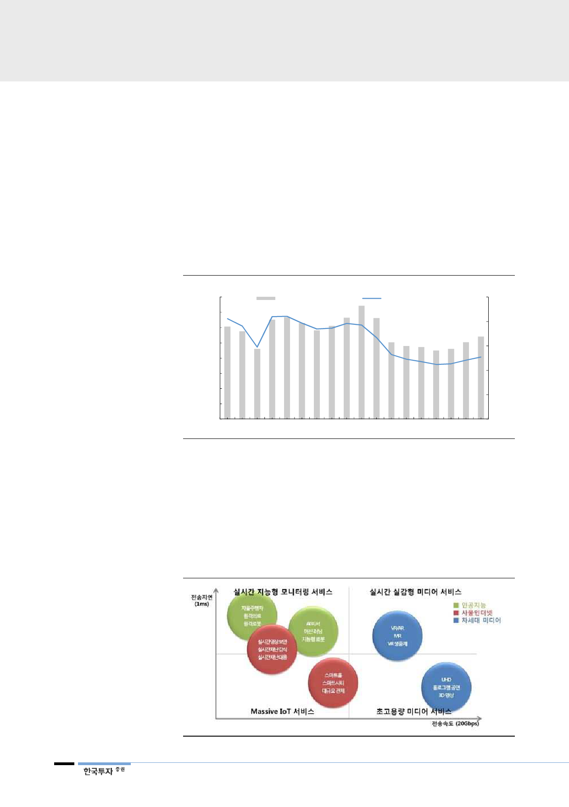

5G 설비투자는 4G망 공유,
가상화, 슬라이싱 기술로
설비투자 절감
5G 전국망 구축 기간 길어
투자 분산, 급격한 투자
증가 없을 것
5G는 VR, AR, AI, IoT,
자율주행 등 다양한 서비스
제공 예상
2019년에 3.5GHz는 5G와 4G를 같이 활용하는 비단독모드(non-standalone)
로 서비스하며 28GHz 5G 서비스는 주요 도시 핫스팟 지역부터 점진적으로 늘려
갈 것이다. 수십 개의 안테나를 이용하는 다중입출력 기술(MIMO), 가상화 기술,
하나의 물리적인 설비를 분리해 자율주행, 사물인터넷 등으로 나누어 이용하는
슬라이싱(network slicing) 기술을 활용해 설비투자를 절감할 것이다.
KT는 향후 2~3년간 설비투자가 2017년 수준을 크게 상회하지 않을 것으로 전
망하고 있다. 전국망 구축 기간이 3~5년으로 4G 2년(2011년 하반기~2013년
상반기)보다 길어 투자가 분산될 것으로 보인다.
[그림 7] 설비투자 추이(별도 기준)
(십억원)
4,000
3,500
3,000
2,500
2,000
1,500
1,000
500
0
2003 2005
별도 기준 설비투자(좌)
2007 2009 2011
(%)
설비투자/서비스 매출액(우)
25
20
15
10
5
0
2013 2015 2017 2019F
자료: KT, 한국투자증권
2019년 3월부터 5G는 기술 특성에 따라 다양한 혁신적인 서비스를 제공한다.
초고속 특성으로 3D, 홀로그램, VR(가상현실, Virtual Reality), AR(증강현실,
Augmented Reality) 등 차세대 미디어가 활성화될 것이다. 초저지연성을 활용
한 자율주행차, 인공지능, 원격의료 서비스가 예상되고 초연결성으로 사물인터넷
(IoT), 스마트시티, 빅데이터 등 서비스가 창출될 것으로 보인다.
[그림 8] 5G에서 예상되는 서비스
자료: KT경제경영연구소, 한국투자증권
8